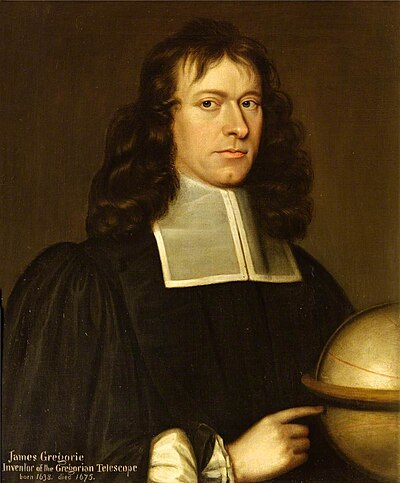

1638–1675
Scottish
Series, optics, astronomy
James Gregory was one of the most original mathematicians of the 17th century, and one of the most overlooked. Born in Drumoak, Aberdeenshire, he studied at the University of Aberdeen and then in Padua, Italy, before returning to hold chairs at St Andrews and Edinburgh.
Gregory discovered several infinite series independently of — and sometimes before — Newton. By 1668 he had found the series expansions for $\arctan x$, $\tan x$, $\sec x$, and $\log \sec x$. His series $\arctan(x) = x - x^3/3 + x^5/5 - \cdots$ (valid for $|x| \leq 1$) is now called the Leibniz–Gregory series, though Gregory found it first. Setting $x = 1$ gives the beautiful identity $\pi/4 = 1 - 1/3 + 1/5 - 1/7 + \cdots$.
These discoveries amounted to specific instances of what Taylor would later systematise as the general Taylor series expansion. Gregory had the individual series but not the general framework — a pattern that repeated throughout 17th-century mathematics, where specific results preceded the unifying theory.
In optics, Gregory designed the Gregorian reflecting telescope in 1663 — five years before Newton built his own reflecting telescope. The Gregorian design uses a concave secondary mirror to produce an upright image, which is more practical for terrestrial observation. The design is still used in some modern telescope arrays.
Gregory died suddenly in October 1675, at the age of 36, while showing his students the moons of Jupiter through a telescope at St Andrews. He had been going blind and collapsed during the observation. Much of his unpublished work was lost, and the full extent of his contributions was only appreciated centuries later.
| Phase | Page | Referenced for |
|---|---|---|
| Phase 4 | Taylor's Theorem | Discovered specific Taylor series instances (1668) |
| Phase 4 | Term-by-Term Operations | Leibniz–Gregory series for $\arctan x$ |